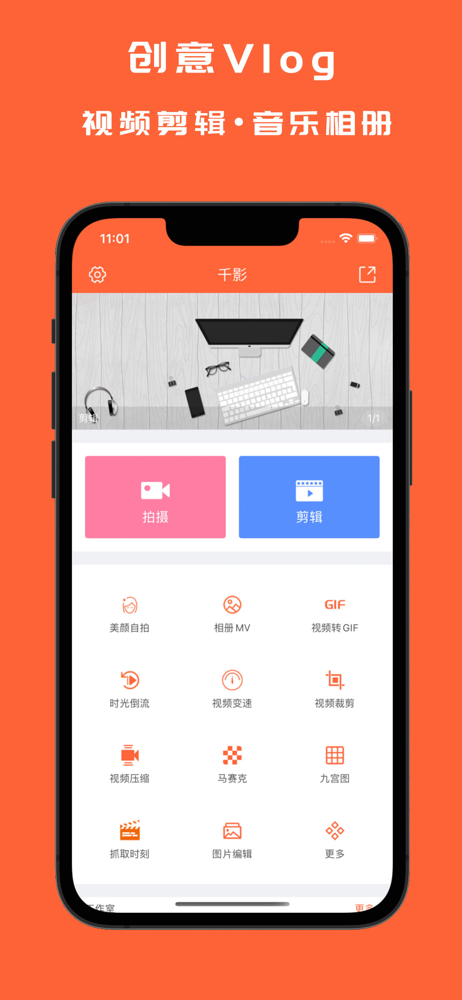
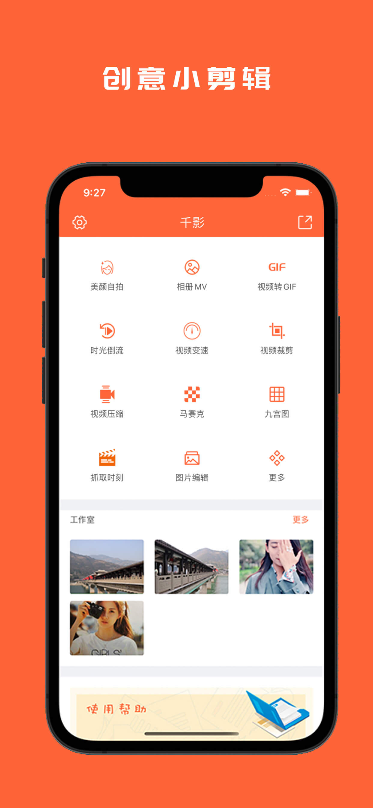
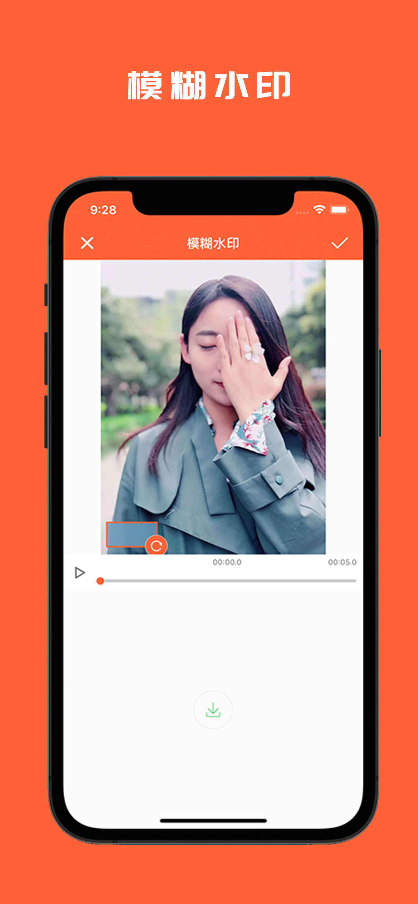
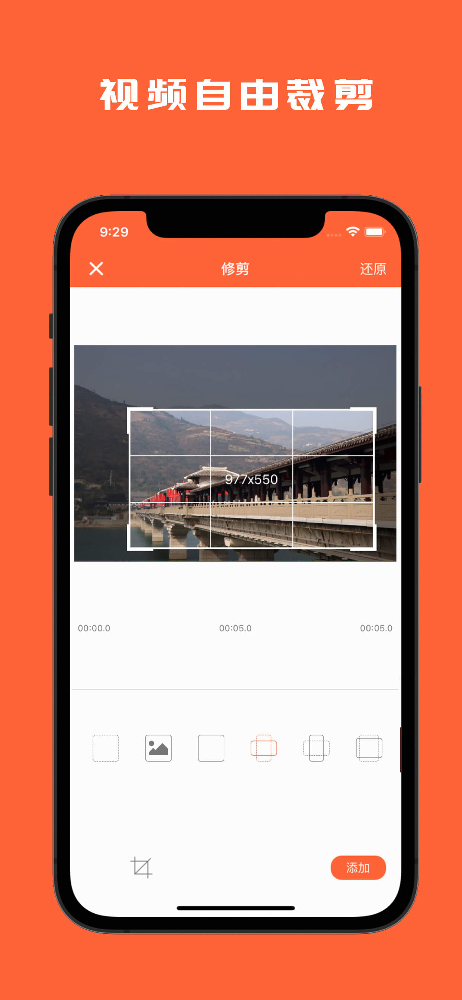
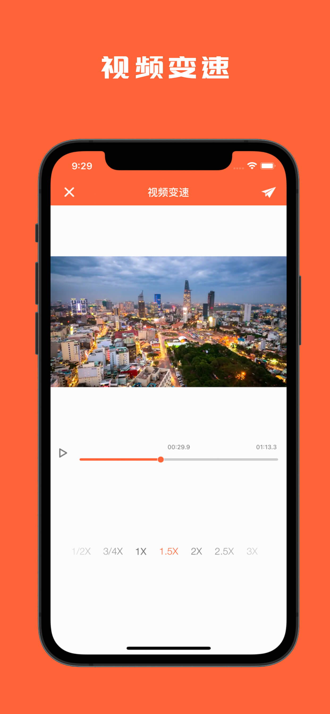
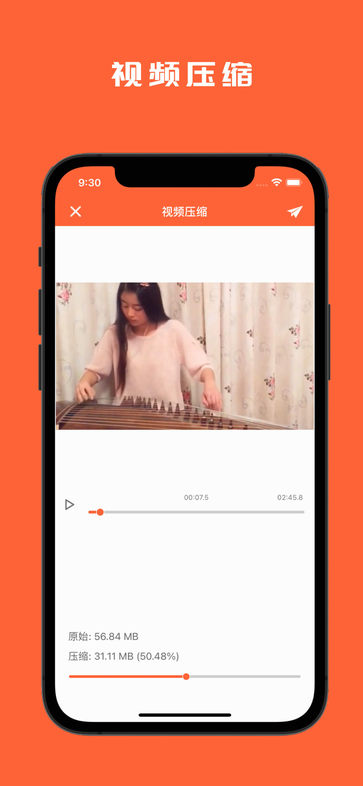
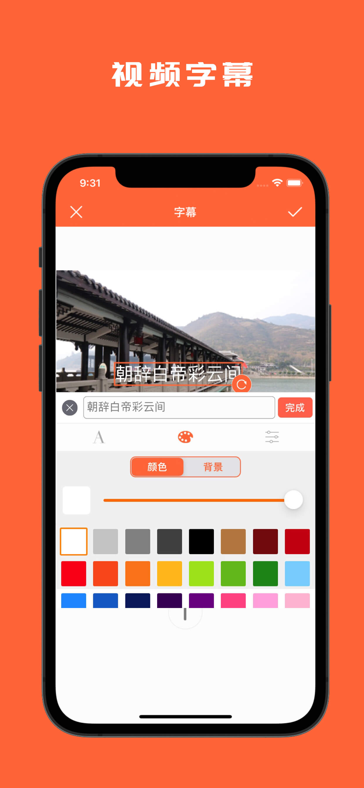
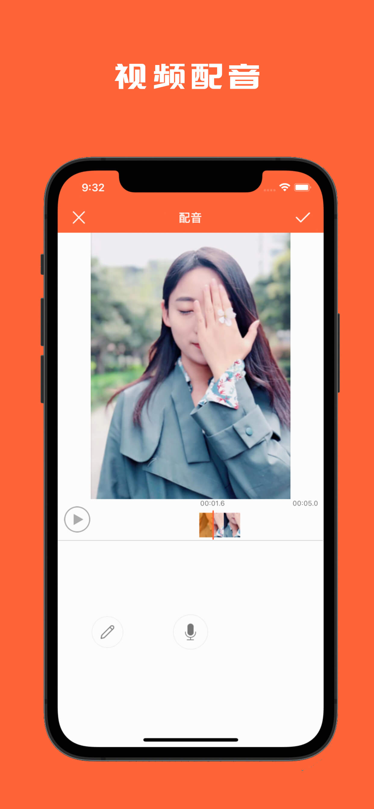

产品介绍
千影是一款专业的视频编辑器和视频制作应用程序
具备以下视频编辑功能：编辑视频、制作视频、剪切视频、画中画视频、组合视频剪辑、音乐视频、添加字幕到视频、加速视频、放慢视频、压缩视频、倒序视频等
你可以下载它以创建和编辑带有音乐和照片的视频，并分享到社交网络
iOS下载

专业视频编辑器
一款免费的视频编辑应用程序软件

创意剪辑工具
支持更多视频或图片剪辑工具

模糊水印
【模糊水印】支持将图片的任意位置进行模糊处理

视频裁剪
【专业视频裁剪】想去除水印吗? 想重新配置字幕吗? 你可以根据自己的喜好选择视频的任意区域对视频进行无限可能的裁剪，支持多种视频比例及自由视频比例选择

视频变速
【视频变速】视频快速或慢速进行播放, 同步音频, 选择相应的播放速率全高清无损导出

视频压缩
【视频压缩】你可以实时预览视频压缩的比例和压缩后的预估文件大小根据自己的需求选择相应的比例进行压缩

字幕添加
【字幕添加】创建带有字体和样式的字幕视频，让你的文字表达更有魅力。
在视频上添加文字效果，使用字幕编辑视频。
为视频和照片添加文字，提供字体颜色，大小，自由变换等编辑效果。

视频配音
【后期视频配音】
可以为你的视频添加真人配音支持，避免了原始视频在纷乱的环境中拍摄携带环境音的问题
更多功能
【实时美颜】视频拍摄高保真的自然美颜效果，多种实时动态滤镜功能，细致的外表，让你美得更真实，给你照镜子般的梦幻体验
【时光倒流】你可以将拍好的视频逆序反向播放，从后向前全高清无损导出
【表情贴纸】支持多套个性化表情、大小、位置的自由变化,让个性化的情感得以表达
【后期视频配乐】支持APP内置丰富的流行轻音乐
将视频与音乐结合在一起，使用音乐和图片编辑视频，将其添加到视频中
组合视频剪辑制作一个视频，编辑带有音乐和照片的视频
【视频创作不限时】不管是5分钟还是5小时,手机存储容量有多大,导出的视频就有多大
【音乐视频制作】支持带有音乐、照片和文字字幕的免费视频编辑器, 免费Tik Tok视频制作与流行轻音乐
【编辑vlog视频】高效的视频编辑应用程序和vlog视频编辑器。
轻松制作创建TikTok视频、故事等，让你轻松成为专业电影制作人
【视频照片编辑器】制作包含照片和任何音乐的视频，带有音乐的视频照片编辑器
【分享视频】支持720p、1080p、2K、4K输出视频/电影，拥有多功能的电影制作人和视频编辑器
...
我们的愿景
坚持简约的设计理念，所见即所得，让所有人都能轻松使用
努力用心, 为您服务!您的每一个反馈与善意的指点, 都是我们进步的动力~